Data Analysis 3 - Data Visualization
Learning Objectives
- Create simple scatterplots and histograms with Base R graphics.
- Learn the basic plotting features of the ggplot2 package.
- Customize the aesthetics of an existing ggplot figure.
- Create plots from data in a data frame.
- Export plots from RStudio to standard graphical file formats.
Suggested Readings
- The “Introduction” chapter of Rick Scavetta’s “Data Visualization with ggplot2 (Part 1)” lesson on DataCamp (it’s free!).
- Chapter 3 of “R for Data Science”, by Garrett Grolemund and Hadley Wickham
- Data Visualization: A practical introduction, by Kieran Healy
- The parks where you’re most likely to be killed by a bear (we’ll be using a dataset on bear attacks in N. America for this lesson).
“The purpose of computing is insight, not numbers”
…and one of the best ways to develop insights from data is to visualize the data. The best starting point I recommend is to go through the “Introduction” chapter of Rick Scavetta’s “Data Visualization with ggplot2 (Part 1)” lesson on DataCamp. The introduction section is free and contains three 5-minute summary videos along with some practice exercises.
Data visualization will be the primary focus of a follow-on course to this one called “Exploratory Data Analysis”. For now, we will explore a few features of R’s plotting packages.
1 R Setup
Before we get started, let’s set up our analysis environment like before:
- Open up your “data-analysis-tutorial” R Project that you created in the first data analysis lesson - if you didn’t do this, go back and do it now.
- Create a new
.Rfile (File > New File > R Script), and save it as “data_viz.R” inside your “data-analysis-tutorial” R Project folder. - This time, instead of downloading the data file and saving it in our
datafolder, let’s just read it in directly from the web!
library(readr)
library(dplyr)
df <- read_csv("https://github.com/emse6574-gwu/2019-Fall/raw/gh-pages/data/north_america_bear_killings.csv")For this lesson, we are going to use the North American Bear Killings dataset, which was compiled by Ali Sanne from the Wikipedia page on fatal bear attacks in North America. The dataset contains recorded killings by black, brown, or polar bears from 1900 to 2019 in North America. Each row in the dataset holds information for a single incident with the following columns:
| Variable | Class | Description |
|---|---|---|
| name | character | Name of victim. |
| age | double | Age of victim. |
| gender | character | Gender of victim. |
| date | character | Date of incident. |
| month | double | Month of incident. |
| year | double | Year of incident. |
| wildOrCaptive | character | “Wild” or “Captive” bear. |
| location | character | Location of incident. |
| description | character | Short description of incident. |
| bearType | character | “Black”, “Brown”, or “Polar” |
| hunter | double | 1 if victim was a hunter, 0 otherwise. |
| grizzly | double | 1 if bear is a Grizzly, 0 otherwise. |
| hiker | double | 1 if victim was a hiker, 0 otherwise. |
| onlyOneKilled | double | 1 if only one victim was killed, 0 otherwise. |
Side node: One thing I learned looking at this data is (kind of like squares and rectangles), all grizzly bears are brown bears, but not all brown bears are grizzly bears.
To confirm that we’ve correctly loaded the data frame, let’s preview the data:
glimpse(df)## Rows: 166
## Columns: 14
## $ name <chr> "Mary Porterfield", "Wilie Porterfield", "Henry Porterfi…
## $ age <dbl> 3, 5, 7, 18, 1, 61, 60, 9, 52, NA, 60, 56, 70, 5, 11, 76…
## $ gender <chr> "female", "male", "male", "male", NA, "male", "male", "f…
## $ date <chr> "19/05/1901", "19/05/1901", "19/05/1901", "24/11/1906", …
## $ month <dbl> 5, 5, 5, 11, 10, 9, 6, 8, 9, 10, 6, 7, 10, 10, 10, 7, 11…
## $ year <dbl> 1901, 1901, 1901, 1906, 1908, 1916, 1922, 1929, 1929, 19…
## $ wildOrCaptive <chr> "Wild", "Wild", "Wild", "Wild", "Captive", "Wild", "Wild…
## $ location <chr> "Job, West Virginia", "Job, West Virginia", "Job, West V…
## $ description <chr> "The children were gathering flowers near their home whe…
## $ bearType <chr> "Black", "Black", "Black", "Black", "Black", "Brown", "B…
## $ hunter <dbl> 0, 0, 0, 0, 0, 0, 0, 0, 0, 0, 0, 0, 0, 0, 0, 0, 0, 0, 0,…
## $ grizzly <dbl> 0, 0, 0, 0, 0, 0, 1, 0, 0, 0, 0, 0, 0, 0, 0, 1, 0, 0, 0,…
## $ hiker <dbl> 0, 0, 0, 0, 0, 0, 0, 0, 0, 0, 0, 0, 0, 0, 0, 0, 0, 0, 0,…
## $ onlyOneKilled <dbl> 0, 0, 0, 1, 1, 1, 1, 1, 1, 1, 1, 1, 1, 1, 1, 1, 1, 1, 0,…Look’s good - let’s start making some plots!
2 Basic plots in R
R has a number of built-in tools for basic graph types. We will only cover two here because they are so common and convenient: scatterplots and histograms.
2.1 Scatterplots with
plot()
A scatter plot provides a graphical view of the relationship between two variables. Typically these are used for “continuous” variables, like time, age, money, etc…things that are not categorical in nature (as opposed to “discrete” variables, like nationality). Here’s a scatterplot of the age of the bear killing victims over time:
plot(x = df$year, y = df$age)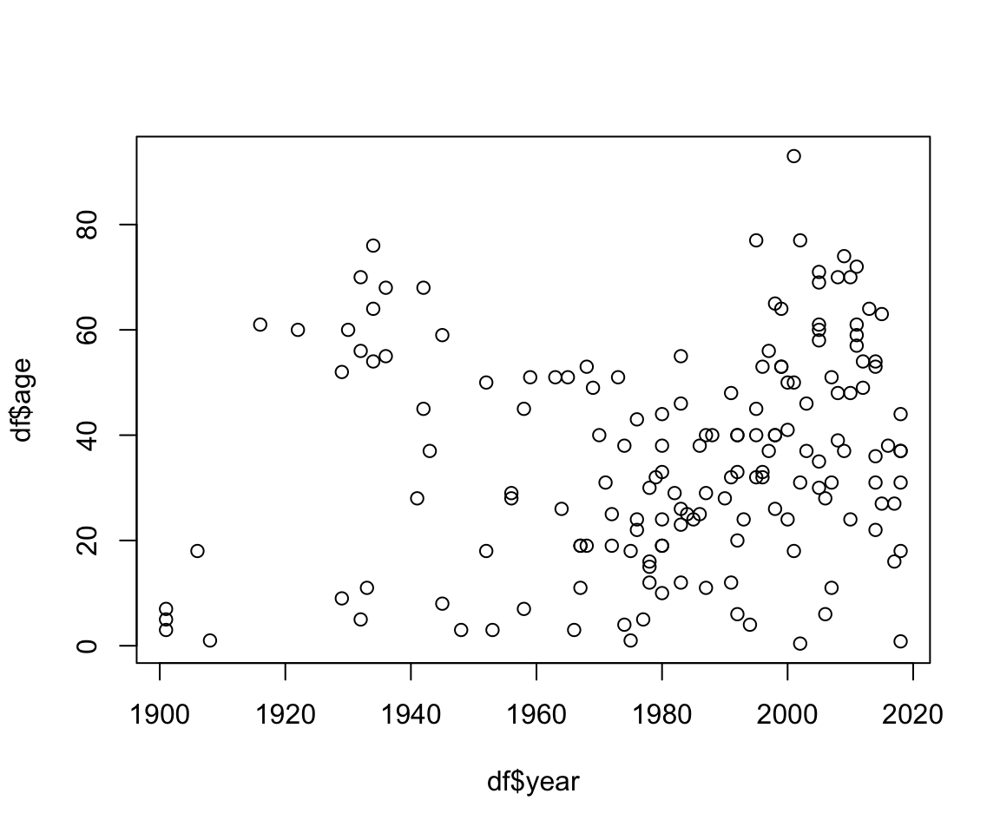
The basic inputs to the plot() function are
x and y, which must be vectors of the same
length. You can customize many features (fonts, colors, axes, shape,
titles, etc.) through graphic
options. Here’s the same plot with a few customizations:
plot(x = df$year,
y = df$age,
col = 'darkblue', # "col" changes the point color
pch = 19, # "pch" changes the point shape
main = "Age of bear killing victims over time",
xlab = "Year",
ylab = "Age")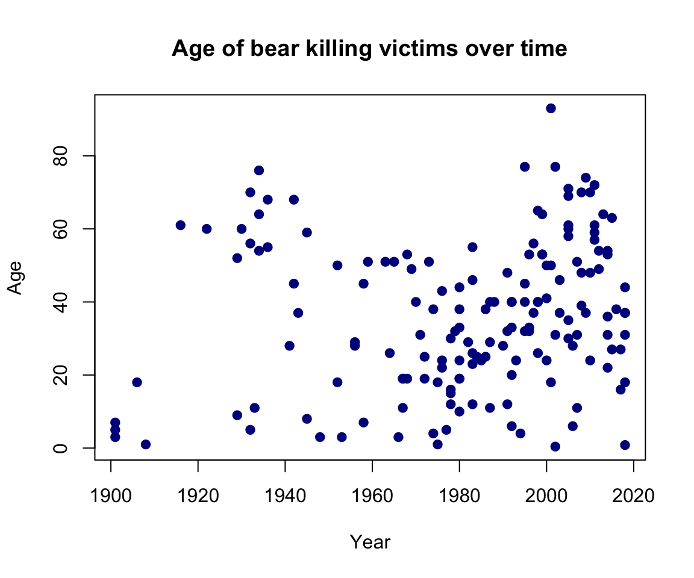
Looks like bear killings are becoming more frequent over time (hmm, why might that be?), though pretty evenly-distributed across age.
2.2 Histograms with
hist()
The histogram
is one of the most common ways to visualize the distribution of
a variable. The hist() function takes just one variable:
x. Here’s a histogram of the month
variable:
hist(x = df$month)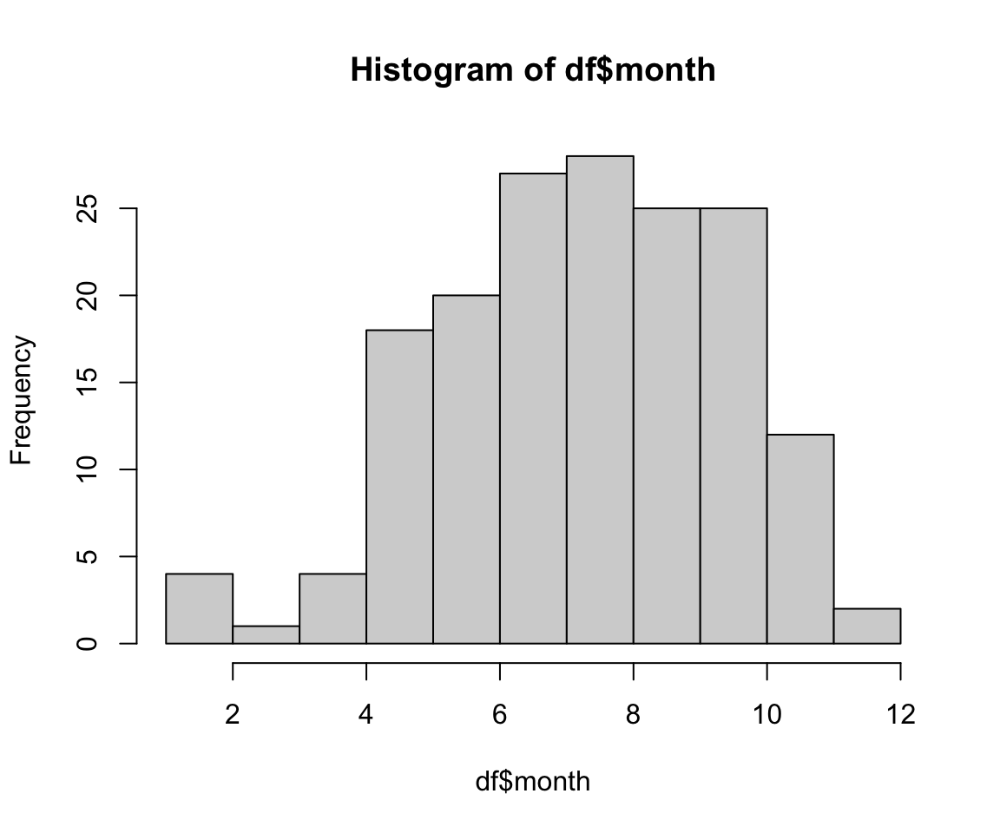
As you might expect, most bear attacks occur during the summer
months, when parks get more visitors. As with the plot()
function, you can customize a lot of the histogram features. One common
customization is to modify the number of “bins” in the histogram by
changing the breaks argument. Here we’ll fix the number of
bins to 12 - one for each month:
hist(x = df$month,
breaks = 12,
col = 'darkred',
main = "Distribution of bear killings by month",
xlab = "Month",
ylab = "Count")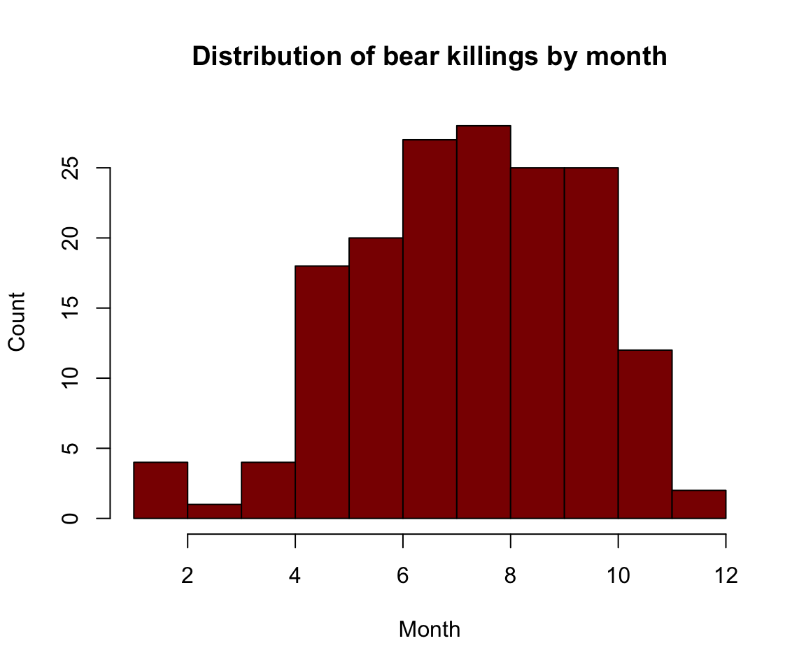
3 Advanced figures with
ggplot2

While Base R plot functions are useful for making simple, quick
plots, many R users have adopted the ggplot2 package as
their primary tool for visualizing data.
3.1 The Grammar of Graphics
The ggplot2 library is built on the “Grammar of
Graphics” concept developed by Leland Wilkinson. A “grammar of
graphics” (that’s what the “gg” in “ggplot2” stands for) is a framework
that uses layers to describe and construct visualizations or
graphics in a structured manner. Here’s a visual summary of the
concept:

We will start using ggplot2 by re-creating some of the
above plots, but using ggplot functions to get a feel for the syntax.
But first, install and load the library:
install.packages("ggplot2")
library(ggplot2)3.2 A blank slate
The ggplot() function is used to initialize the basic
graph structure, and then we add layers to it. The basic idea is that
you specify different parts of the plot, and add them together using the
+ operator. We will start with a blank plot and will add
layers as we go along:
ggplot(data = df)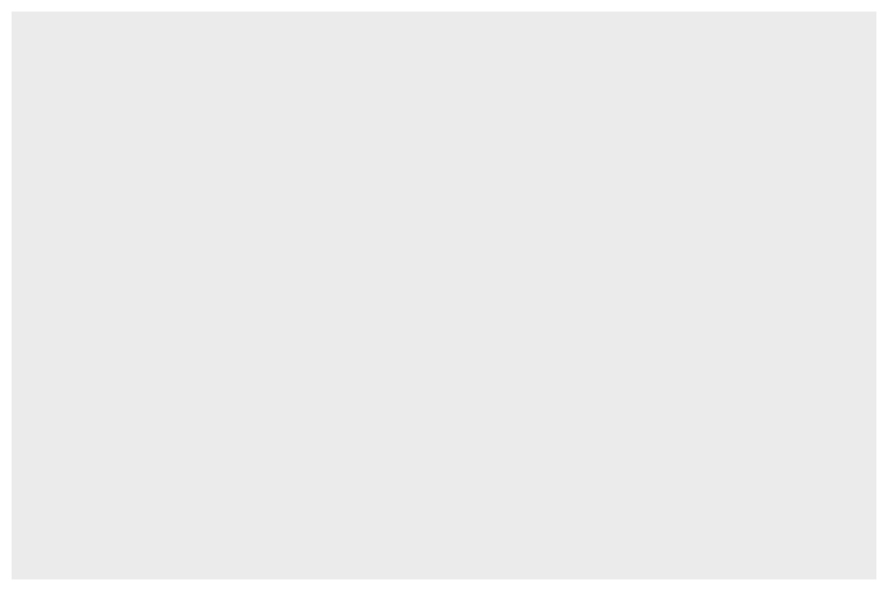
3.3 Geoms and aesthetics
Geometric objects (called “geoms”) are the actual marks we put on a plot. You can have an unlimited number of layers, but at a minimum a plot must have at least one geom. Examples include:
geom_point()makes a scatter plot by adding a layer of points.geom_line()adds a layer of lines connecting data points.geom_bar()adds bars for bar charts and histograms.geom_boxplot()adds boxes for boxplots.
Each type of geom usually has a required set of
aesthetics to be set, and usually accepts only a subset of all
aesthetics. Aesthetic mappings are set with the aes()
function. Examples include:
- position (i.e., on the x and y axes)
- color (“outside” color)
- fill (“inside” color)
- shape (of points)
- linetype (solid, dashed, dotted etc.)
- size (of geoms)
3.4 Scatterplots with
geom_point()
Now that we know what geoms and aesthetics are, let’s put them to
practice by making a scatterplot. To start, we will add the
geom_point() geom and we’ll set the position for the x- and
y-axis inside the aes() function:
ggplot(data = df) +
geom_point(aes(x = year, y = age))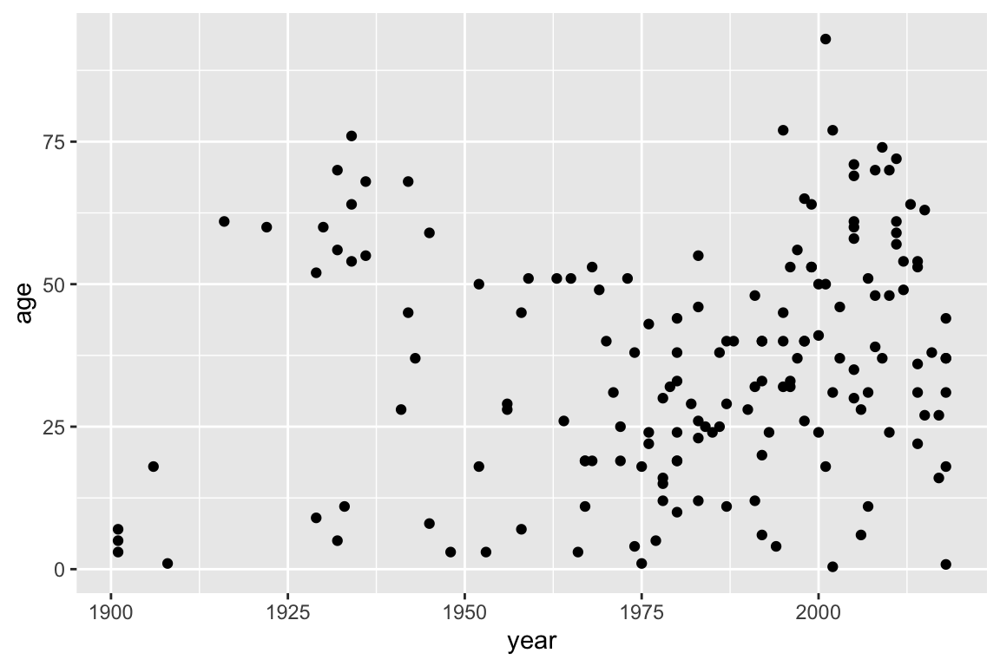
Notice how we’ve “added” the geom_point() layer to the
previous blank slate. Also note that the names we used to define the
x and y axes are column names in the data
frame, df. These must be placed inside the
aes() function, which tells ggplot to look in
df for those columns.
Let’s further customize the plot with a few more layers:
ggplot(data = df) +
geom_point(aes(x = year, y = age)) +
# Adjust the plot labels and add a title
labs(x = "Year",
y = "Age",
title = "Age of bear killing victims over time") +
# Change some of the overall plot looks
theme_minimal()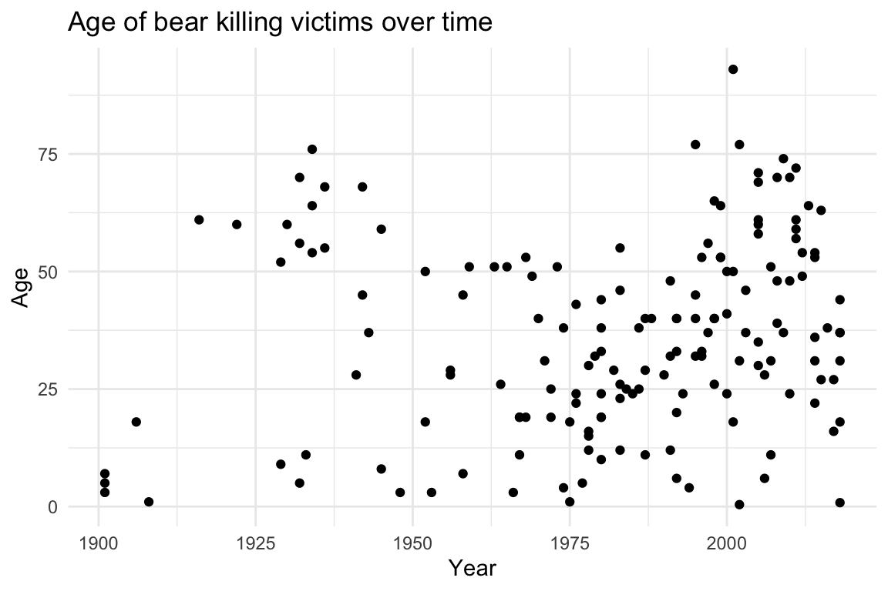
In the above plot, the labs() layer enables you to
modify the plot labels and title. The theme_minimal() layer
changes some global aspects of the plot, such as the background color,
grid lines, legend appearance, etc. There are many themes
to choose from, but keeping things simple with
theme_minimal() often improves the plot from the default
theme settings.
3.5 Histograms with
geom_bar()
Bar charts are great for comparing different values of a numerical
variable. By default, the geom_bar() layer works just like
a histogram in that it plots a count of the variable provided. For
example, here is the same histogram as before - the count of the bear
attacks for each month in the dataset:
ggplot(data = df) +
geom_bar(aes(x = month))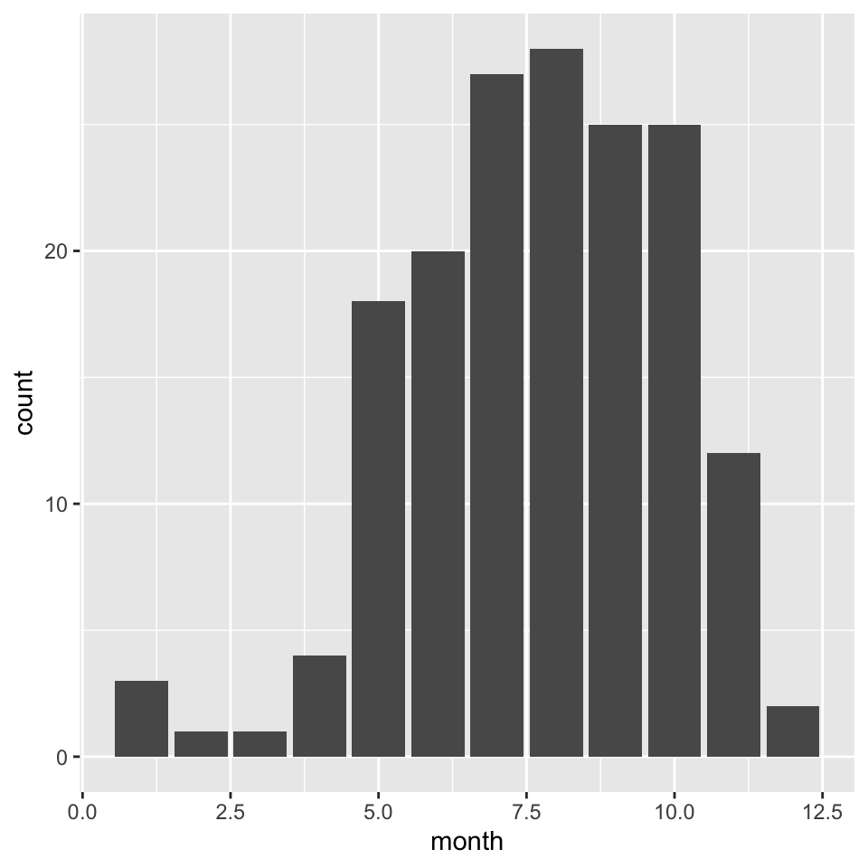
One useful feature of bar plots is to “fill” the color of the bars by
another variable in the data. To do this, add the fill=
argument in the aes() call. For example, here’s the same
histogram with the bar colors representing the type of bear. I’ll also
adjust the x-axis so that it labels the 12 months, and I’ll adjust the
theme and labels:
ggplot(data = df) +
geom_bar(aes(x = month, fill = bearType)) +
# Customize the x-axis scale
scale_x_continuous(breaks=seq(12)) +
# Adjust the plot labels and add a title
labs(x = "Month",
y = "Count",
fill = 'Bear Type',
title = "Distribution of bear killings by month") +
# Change some of the overall plot looks
theme_minimal()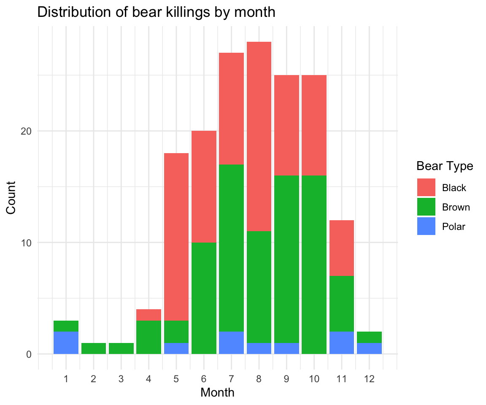
Hmm, looks like brown bears are the most frequent killers, though black bears are a close second.
3.6 Bar charts with
geom_bar()
You can also use geom_bar() to create a bar chart (as
opposed to a histogram). Whereas histograms report the count of
one variable (x), bar charts also have a y
variable that determine the height of bars. To make a bar chart, you
have to tell geom_bar() to use the actual y
values in the aes() call by adding the
stat="identity" argument in geom_bar(),
otherwise it will use the default statistic (which is
stat="count" to make a histogram).
For example, here is a bar chart of the number of bear killings in
each year - notice how we first create a new summary data framed called
annualKillings from the original df:
annualKillings <- df %>% count(year)
ggplot(data = annualKillings) +
# Notice the addition of the "stat = 'identity'" argument in geom_bar()
geom_bar(aes(x = year, y = n), stat = 'identity') +
labs(x = "Year",
y = 'Number of killings',
title = "Annual number of deadly bear attacks over time") +
theme_minimal()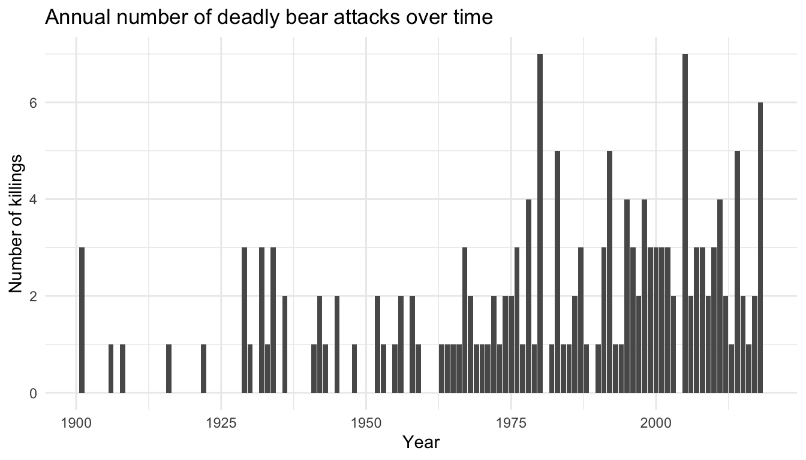
Just like with histograms, you can “fill” the color of the bars with
another variable. Let’s see how the number of incidents vary by the
gender of the victim. Notice again how we first use the
count() function to compute the number of killings by
gender:
annualKillingsByGender <- df %>%
filter(! is.na(gender)) %>%
count(year, gender)
ggplot(data = annualKillingsByGender) +
# Notice the addition of the "fill = gender" argument in aes()
geom_bar(aes(x = year, y = n, fill = gender), stat = 'identity') +
labs(x = "Year",
y = 'Number of killings',
fill = "Victim gender",
title = "Annual deadly bear attacks over time and victim gender") +
theme_minimal()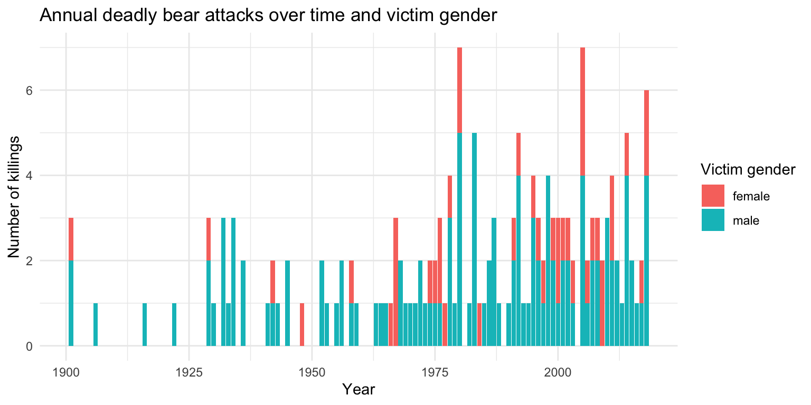
4 Customizing your ggplot
While the ggplot2 library offers a wide variety of
options for customizing your plots, remembering exactly how to do
specific tasks (like changing the color of a line, or changing the
position of a legend) can be difficult. Fortunately, there are wonderful
resources for looking up all the tricks to make the perfect ggplot. Here
are a few:
- RStudio
ggplot2Cheatsheet - Tidyverse
ggplot2reference guide - R Cookbook for
ggplot2 - Top
50
ggplot2visualizations
One particularly useful tool is the ggThemeAssist package, which is an RStudio plug in that creates a graphic interface for editing ggplots. You can install it from CRAN:
install.packages("ggThemeAssist")After installing, the tool is available in the “Addins” menu within
RStudio. To edit your ggplot, just highlight a ggplot object in your
current script and run the “Addin” from the Addins menu. Use the input
widgets to get your ideas into shape. After terminating
ggThemeAssist, a character string containing your
desired changes in standard ggplot2 notation is inserted in
your script. Re-running your script now produces the plot you just
configured using ggThemeAssist!

5 Saving figures
The first (and easiest) is to export directly from the RStudio
‘Plots’ panel, by clicking on Export when the image is
plotted. This will give you the option of .png or
.pdf and selecting the directory to which you wish to save
it to. I strongly recommend you save images as .pdf types
as these won’t pixelate when you change the image size.
Another easy way to save a ggplot figure is to use the
ggsave() function. First, create your plot and save it as
an object:
scatterPlot <- ggplot(data = df) +
geom_point(aes(x = year, y = age))Then save the plot using ggsave() (make sure you create
a folder called “plots” in which to save your plot):
ggsave(filename = file.path('data', 'scatterPlot.pdf'),
plot = scatterPlot,
width = 6,
height = 4)Page sources:
Some content on this page has been modified from other courses, including:
- Data Analysis and Visualization in R alpha, by Data Carpentry contributors.
George Washington University | School of Engineering & Applied Science
Dr. John Paul Helveston | jph@gwu.edu | Mondays | 6:10–8:40 PM | Phillips Hall 108 | |
This work is licensed under a Creative Commons Attribution 4.0 International License.
See the licensing page for more details about copyright information.
Content 2019 John Paul Helveston